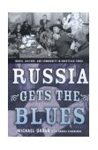

|
17 июля в клубе в присутствии автора состоялась презентация книги Майкла Урбана "В России начинается блюз: музыка, культура и сообщество в беспокойное время"  Книга представляет собой серьезной культурно-социологическое исследование, проведенное в группе людей, избравших исполнение блюза - своей основной деятельностью. Элиот Боренштейн, возглавляющий отделение изучения России и славянских стран в Нью-йоркском университете, пишет в своей рецензии: "Майкл Урбан спешно достигает нескольких целей: он выстраивает детализированную убедительную историю блюза в России: он проводит анализ это малой, но растущей субкультуры; он показывает, какая экономику и инфраструктуру появилась, когда блюз был принят в России; и он исследует феномен российского блюза в более широком контексте культурной политики. Книга прекрасно написана языком ясным, доступным и умным". Перевод всей книги остается делом туманного будущего. Пока мне очень хотелось из предисловия, где автор выражает свои признательности тем, кто помогал ему в этой не имеющей аналога работе, привести здесь два абзаца - они замечательные. Но и первый абзац можно не выбрасывать. Надо только отметить, что сбор материала автор закончил два года назад - поэтому все факты приводятся по состоянию на тот период. " ACKNOWLEDGEMENTS Прежде всего я хочу поблагодарить Андрея Евдокимова, моего соратника, без чьей помощи эта книга никогда бы не появилась. Когда речь заходит о блюзе в России, то он - самое знающее лицо. Более 15 лет он ведет блюзовую радиопередачу; он принимал участие в организации блюзовых фестивалей в этой стране; он писал статьи о блюзовой музыке для российских печатных изданий; и он заправляет главным в рунете интернет-сайтом о блюзе: www.blues.ru. Он знает всех на московской блюзовой сцене и поддерживает контакты примерно с дюжиной блюзбэндов, играющих по всей стране. Его знания были использованы в главах со второй по четвертую и в третьей части главы пятой, первые наброски которых мы вместе составляли в его квартире, по большей части на основе его ответов на мои вопросы. В последствии я переработал эти наброски, соединив их с другими материалами, но его мысли, толкования, богатые описания наполняют эти части книги. Моя признательность также группе лиц, которых слишком много, чтобы упомянуть каждого (хотя большинство их имен появляется на страницах этой книги) - это те члены русского блюзового сообщества, кто отдал свое время мне и моим вопросам, кто приглашал меня к себе в дом и на свои выступления. Те, кто по с обезоруживающей щедростью души относились ко мне как к одному из своих. Я могу только надеяться, что мои описания помогут по справедливости оценить жизнь тех необыкновенных людей, кто продолжает страстно служить блюзу перед лицом обескураживающих материальных условий. Если, как часто говорится, сегодня Россия ждет новых героев, то поиски стоит начать среди них. ... В завершение, на самом почетном месте - моя глубочайшая благодарность адресована моей жене Веронике, чья теплота, понимание, упорная работа (она перепечатывала эту книгу), плодотворные идеи во множестве помогли мне при работе над этим проектом. Мне чертовски повезло, что я женился на женщине, которая вдобавок ко всем своим прочим замечательным качествам, нисколько не протестовала против того, чтобы провести лето-другое в русских блюзовых кабаках. Эта книга посвящается ей. М.Урбан "Презентация книги в "БиБиКинге" собрала весь цвет московской блюзовой общины. Атмосфера царила сердечная, что свойственно практически всем средам в клубе. Однако на этот раз и качество и энтузиазм были, пожалуй, куда выше обычного. Майк, давний любитель блюза и лидер собственного полулюбительского блюзбэнда, и сам принял участие в джеме, очень душевно исполнив стандарт Джуниора Уэллса "Колдун" (Junior Wells "Hoodoo Man"). Юрий Каверкин сотоварищи продемонстрировал тот самый "блюз на балалайках", о невозможности существования которого нам постоянно твердят "знатоки". Джем как таковой перетек в вольное музицирование. Домой возвращались с песнями... М.Мишурис резюмировал событие словами: "Раньше мы были просто парни из пивняка, а теперь - люди из серьезной книги". |
{kind=link}